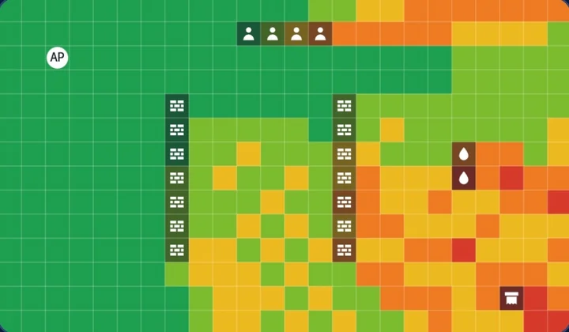
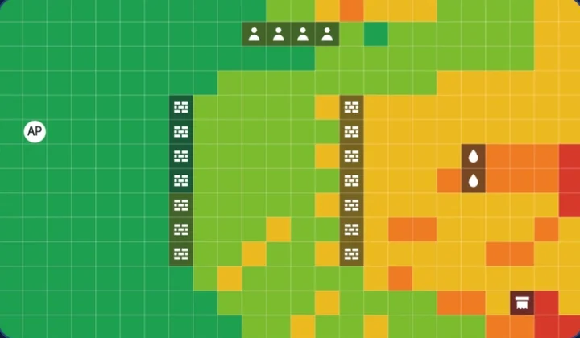
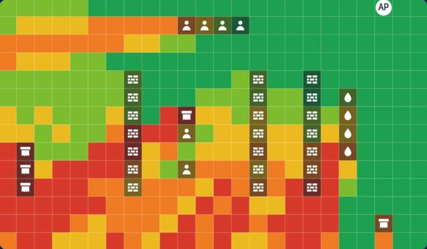
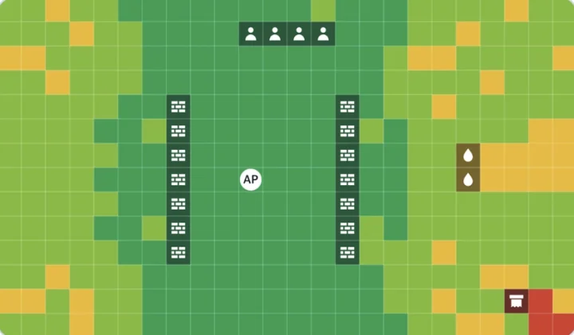
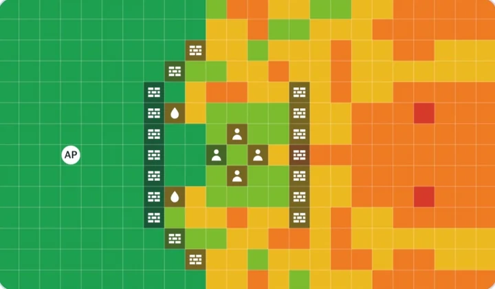

강연 소개
와이파이 막대는 왜 자리마다 다를까?
폰을 꺼내 와이파이 막대를 보고, 옆자리로 한 칸 옮겨 다시 보세요. 막대 수가 달라졌나요? 전파는 눈에 보이지 않지만 신호 세기를 측정하면 지도로 그릴 수 있어요. 강연장의 전파를 추적해 함께 "양곡도서관 전파지도"를 완성해요.
진행 순서
- 통신 강국이 되기까지우리나라는 무슨 강국일까요? 전신에서 5G까지 네 개의 장면으로 따라가요.
- 탐정단 임명자리마다 와이파이 막대가 다른 사건을 맡아요.
- 전파의 원리소리와 전파는 둘 다 파동이에요. 소리는 공기가 있어야 가지만 전파는 우주에서도 가요. 전파가 약해지는 이유와 dBm 읽는 법을 배워요.
- 예측 투표신호가 가장 강한 곳과 가장 약한 곳을 손들어 골라요.
- 전파지도 만들기탐정 폰과 탐정 노드로 12분 동안 측정하고, 예측과 겹쳐 봐요.
- 반전 실험물통, 손, 알루미늄 호일로 신호 막기 챌린지를 해요.
- 안테나 관찰안테나 길이와 파장, 차 안테나와 내 폰의 안테나를 살펴봐요.
- 양곡도서관 전파지도오늘 측정한 세 가지 신호를 비교하고 지도를 완성해요.
- AI와 진로AI가 전파를 타고 오는 길과 전파를 다루는 사람들을 만나요.
- 탐정 미션과 질문집에서 할 미션 두 가지를 받고, 궁금한 것을 물어봐요.
통신 강국이 되기까지
우리나라는 무슨 강국일까요?
지금은 어디서나 와이파이가 되지만 50년 전에는 전화 한 대도 귀했어요. 네 개의 장면으로 따라가 봐요.
-
장면 1
50년 전, 기술 불모지였던 대한민국에
1976한국전자통신연구원(ETRI)의 시작12월 30일, ETRI의 전신인 한국전자기술연구소가 문을 열었어요.
출처: ETRI 45주년 연구성과 -
장면 2
전선을 타던 신호에서 전선 없는 전파로
1885한성전보총국, 첫 전신9월 28일 한성(서울)과 제물포(인천)가 전선으로 연결되어 전보를 주고받았어요.
출처: 한국민족문화대백과사전1927경성방송국, 첫 라디오 방송2월 16일 경성방송국(JODK)이 우리나라 첫 라디오 방송을 시작했어요. 전선 없이 공간을 건너온 첫 전파예요.
출처: 국가기록원 -
장면 3
전화 교환기를 우리 손으로
1984TDX-1 시범 개통외국에서 사 오던 전화 교환기를 우리 기술로 만들었어요.
1986TDX 상용화우리가 만든 교환기가 실제 전화망에서 쓰이기 시작했어요.
출처: ETRI 45주년 연구성과 -
장면 4
세계에서 제일 먼저 켠 CDMA와 5G
1996CDMA 휴대전화, 세계에서 처음우리나라가 CDMA 방식 휴대전화 서비스를 세계에서 처음으로 상용화했어요. 이때 우리나라 휴대전화가 아날로그에서 디지털로 바뀌었어요.
출처: 한국전자통신연구원(ETRI)20195G, 세계에서 처음4월 3일 밤 11시, 우리나라에서 세계 첫 5G 스마트폰 개통이 이루어졌어요.
출처: 대한민국 정책브리핑
ICT가 뭘까?
정보를 멀리 떨어진 곳까지 전달하고 처리하는 기술이에요. 와이파이, 라디오, 인터넷이 모두 ICT에 속해요.
다음은 6G예요. 아직 서비스는 없고, 2030년쯤 나올 것으로 보고 있어요.
전파 놀이터
전파가 약해지는 다섯 가지 이유
- 거리멀수록 약해요
- 벽두꺼울수록 약해요
- 물전파를 흡수해요
- 사람 몸몸의 60~70%가 물
- 금속전파를 튕겨 내요
공유기를 옮기고 벽과 물통을 놓아 보면서 확인해요. 아래 버튼을 고른 뒤 지도를 누르면 그 자리에 놓여요.
- 매우 강함
- 강함
- 보통
- 약함
- 매우 약함
지도를 누르거나 가리키면 그 위치의 예상 신호 세기가 표시돼요.
원리 설명용 모형이에요. 거리에 따른 자유공간 감쇠(20·log10 거리)와 장애물별 감쇠(dB)만 계산하므로 실제 측정값과는 달라요.
이렇게 놓아 봤어요
공유기 자리와 장애물을 바꾸면 같은 도서관도 색이 이렇게 달라져요. 공유기를 가운데에 둘수록 신호가 고르게 퍼져요.

도서관 예시 그대로벽 두 줄과 물통 뒤가 주황과 빨강이에요.
공유기를 왼쪽 가운데로앞쪽은 초록이 넓어졌지만 벽 너머 오른쪽은 여전히 약해요.
오른쪽 위 구석에 장애물 가득공유기에서 가장 먼 왼쪽 아래가 빨강이 됐어요.
두 벽 사이 가운데에거의 모든 칸이 초록과 연두예요. 공유기 명당이에요.
벽으로 사람을 감싸면벽 너머 오른쪽 전체가 주황으로 바뀌었어요.
안테나 관찰
안테나 길이는 파장을 따라가요
- 옥상 TV 안테나파장 1~5m가로대 1m 넘게
- 거실 토끼귀 안테나파장 1~5m한 팔 1m
- 자동차 라디오FM 파장 3m안테나 75cm
- 30년 전 휴대폰파장 35cm안테나 9cm
- 탐정 노드 와이파이파장 12cm안테나 3cm
차 안테나는 어디로 갔을까요
- 1980~90년대긴 막대 안테나FM 파장 3m의 4분의 1, 75cm. 전동으로 올라오는 차도 많았어요.
- 2000년대짧아지고 숨어요짧은 막대로 줄이고, 뒷유리 열선 사이에 안테나를 그려 넣었어요.
- 2010년대부터샤크핀 하나에 다 모았어요6cm 지느러미 안에 GPS(19cm 파장), LTE, DMB, 라디오 안테나가 함께 있어요.
내 폰의 안테나는 어디에 있을까요? 탐정 미션 2에서 직접 찾아봐요.
양곡도서관 전파지도
오늘 측정한 세 가지 신호
10월 31일 오후 3시 강연 중에 탐정단이 잰 값이 여기에 실시간으로 올라와요. 구역마다 잰 값의 가운데 값으로 색을 칠하고, 구역 사이는 가까운 구역 값으로 채워요. 강연이 끝나면 완성된 지도도 올려요.
AI와 전파
AI는 전파를 타고 와요
- 질문
- 전파
- 데이터
센터 - 전파
- 답
AI의 두뇌는 멀리 있는 데이터센터에 있어요. 질문은 전파를 타고 공유기나 기지국까지 가고, 거기서부터는 땅속 광케이블을 따라 데이터센터에 닿아요. 답도 같은 길로 돌아와요. 챗봇, 번역, 음성 비서 같은 AI는 대부분 데이터센터에서 계산해요. 폰 안에서 바로 돌아가는 작은 AI도 있지만, 큰 AI일수록 빠르고 안정된 통신이 꼭 필요해요. 자율주행차, 스마트 공장, 원격 진료도 마찬가지예요.
전파가 끊기면 데이터센터의 AI는 대답할 수 없어요
직접 확인해 보세요: AI에게 질문한 뒤 비행기 모드를 켜고 다시 물어보면 어떻게 될까요? 비행기 모드에서도 와이파이가 켜져 있을 수 있으니 와이파이 표시도 꺼졌는지 확인하세요.
진로
전파를 다루는 사람들
이런 일을 배우는 곳 중 하나가 ICT폴리텍대학 정보통신학과예요.
탐정 미션
집에서 하는 탐정 미션
탐정단의 다음 사건 현장은 우리 집이에요. 미션 기록은 이 폰에만 저장되고 외부로 전송되지 않아요.
미션 1
우리 집에서 와이파이 신호가 가장 강한 방을 찾아라!
방마다 이동해 폰 화면 위쪽의 와이파이 막대를 보고 누르면 우리 집 명당이 나와요.
- 공유기는 집 가운데, 바닥보다 높은 곳에 두면 신호가 고르게 전달돼요.
- 어항, 물통, 냉장고처럼 물과 금속이 있는 곳 옆은 피해요. 전파를 흡수하거나 반사해요.
- 전파가 벽과 문을 여러 번 통과해야 하는 방은 신호가 약해져요.
미션 2
내 폰의 안테나를 찾아라!
안테나는 화면이 아니라 테두리 안에 있어요. 먼 방에서 폰 위쪽 끝을 감싸 보면 안테나 자리를 알 수 있어요.
- 옆면을 살펴봐요. 테두리에 가는 선(안테나 선)이 보이나요? 그 근처에 안테나가 있어요. 와이파이 안테나는 위쪽 가장자리에 많아요.
- 공유기에서 먼 방으로 이동해요. 신호 막대가 2~3칸인 곳이 적당해요.
- 위쪽 끝을 손으로 감싸고 10초 기다려요. 신호 막대는 몇 초 뒤에 반영돼요.
- 아래쪽 끝, 화면 가운데도 똑같이 해 봐요.
어디를 감쌌을 때 신호 막대가 가장 많이 줄었나요?
폰마다 안테나 자리가 조금씩 달라요. 그래서 직접 찾아보는 게 탐정의 일이에요.
지난 강연
2025 · 소리의 과학
작년 서산 대산도서관에서는 들리는 파동, 소리를 탐구했어요. 올해는 보이지 않는 파동, 전파를 찾아요.
퉁퉁퉁퉁! 소리의 과학 게임 실험실